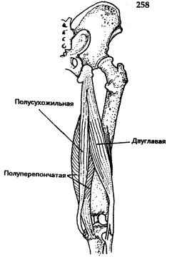

Темы / Суставы / Коленный сустав
Тема: Коленный сустав

Классификация сустава
Коленный сустав. Art. genus.
1. Простой Кости, образующие сустав: бедренная, большеберцовая. (ряд авторов считает сустав сложным и включает в его состав надколенник, однако он находится внутри сухожилия четырехглавой мышцы бедра и рассматривают его как сесамовидную кость).
2. Суставные поверхности медиального и латерального мыщелков бедренной и большеберцовых костей (суставная поверхность надколенника). Суставная капсула прикрепляется на бедренной кости чуть выше суставных поверхностей; на большеберцовой (и надколеннике) по краям суставных поверхностей.
3. По форме Мыщелковый.
4. Комплексный, имеются медиальный и латеральный мениски (meniscus medialis et lateralis).
5. Некомбинированный.
6. Двухосный: фронтальная ось – сгибание и разгибание; вертикальная ось – вращение (при сгибании голени).
7. Внекапсулярные связки : (lig. collaterale fibulare)
а) малоберцовая коллатеральная связка (lig. collaterale fibulare) – от латерального надмыщелка бедренной кости к латеральной поверхности малоберцовой кости.
б) косая подколенная связка (lig. popliteum obliquum) – вплетается в заднюю стенку суставной сумки, прикрепляется к задней поверхности медиального мыщелка большеберцовой кости.
в) дугообразная подколенная связка (lig. popliteum arcuatum) – перекидывается с малоберцовой кости на большеберцовую (похоже на кольцевую связку лучевой кости).
Связки надколенника (lig. patellae):
1. Медиальная и латеральная, поддерживающие связки надколенника (retinaculum patellae mediale et laterale).
2. Капсулярные: Большеберцовая коллатеральная связка (lig. collaterale tibiale) – между медиальными мыщелками.
3. Интракапсулярные:
Передняя крестообразная связка (lig. cruciatum anterius) – медиальный мыщелок и переднее межмыщелковое поле.
Задняя крестообразная связка (lig. cruciatum posterius) – латеральный мыщелок и заднее межмыщелковое поле.
Поперечная связка колена (lig. transversum genus) – соединяет передние концы менисков.
Складки, содержащие жировую ткань (plicae adiposae) – крыловидные складки (plicae alares) – по бокам от надколенника и поднадколенниковая синовиальная складка (plica synovialis infrapatellaris).
Синовиальные сумки:
1. Наднадколенниковая сумка
2. Глубокая поднадколенниковая сумка
3. Подкожная преднадколенниковая сумка
4. Подсухожильная сумка портняжной мышцы
5. Подколенное углубление
Биомеханика коленного сустава

Вокруг фронтальной оси происходят сгибание и разгибание общим объемом 150 градусов. При сгибании (вследствие расслабления коллатеральных связок) возможно ее вращение относительно вертикальной оси. Общий объем вращения достигает 15 градусов, пассивного вращения – 35.
Крестообразные связки тормозят пронацию, при выполнении супинации они расслабляются. Супинация тормозится в основном натяжением коллатеральных связок. Сгибание ограничиваются натяжением крестообразных связок и сухожилием четырехглавой мышцы бедра.
Кровоснабжение:
Из бассейна бедренной артерии (a. femoralis), а именно ветвями подколенной (a. poplitea), передней (a. tibialis anterior) и задней (a. tibialis anterior posterior) большеберцовой артерий.
a. genus inferior medialis из a. poplitea.
a. genus media из a. poplitea.
a. recurrens tibialis anterior из a. tibialis anterior.
a. recurrens tibialis posterior из a. tibialis anterior.
a. circumflexa fibulae из a. tibialis anterior posterior.
Ветви артерий, приведенных выше, образуют артериальную сеть, оплетающую капсулу коленного сустава.
Отток венозной крови – по одноименным венам.
Иннервация
Из крестцового сплетения, ветвями седалищного нерва (n. ischiadicus) – большеберцовый и общий икроножный нервы (nn. tibialis et peroneus communis).
Мышцы, действующие на сустав:
Сгибание (flexio):
1. Двуглавая мышца бедра (m. biceps femoris).
2. Полусухожильная мышца (m. semitendinosus).
3. Полуперепончатая мышца (m. semimebranosus).
4. Портняжная мышца (m. sartorius).
5. Тонкая мышца (m. gracilis)
6. Подколенная мышца (m. popliteus).
7. Икроножная мышца (m. gastrochemius).
8. Подошвенная мышца (m. plantaris).
Разгибание (extensio):
1. Четырехглавая мышца бедра (m. quadriceps femoris)
Вращение внутрь (pronatio):
1. Полусухожильная мышца (m. semitendinosus)
2. Полуперепончатая мышца (m. semimebranosus).
3. Портняжная мышца (m. sartorius).
4. Тонкая мышца (m. gracilis).
5. Подколенная мышца (m. popliteus).
6. Икроножная мышца (медиальная головка) (m. gastrochemius).
Вращение наружу (supinatio):
Двуглавая мышца бедра (m. biceps femoris).
Икроножная мышца (латеральная головка). (m. gastrochemius).
Рентгеноанатомия коленного сустава:
На рентгенограмме коленного сустава четко видны образующие его суставные поверхности костей. Надколенник наслаивается на дистальный эпифиз бедренной кости. Рентгеновская суставная щель широкая, изогнутая в средней своей части.
Изображения

Надколенниковая поверхность
Задняя крестообразная связка
Передняя крестообразная связка
Поперечная связка колена
Медиальный мениск
Большеберцовая коллатерльная связка
Сухожилие надколенника
Надколенник
Сухожилие четырехглавой мышцы бедра
Межкостная перепонка
Малоберцовая кость
Малоберцово-большеберцовая связка
Сухожилие двуглавой мышцы бедра
Латеральный мениск
Малоберцовая коллатеральная связка

Рентген коленного сустава
МРТ Коленного сустава
Тестирование по теме: Коленный сустав
Приложение
Рис. 113. Коленный сустав, правый, вид спереди (суставная капсула удалена, сухожилие четырехглавой мышцы бедра с надколенником оттянуто вниз): 1 - надколенниковая поверхность; 2 - задняя крестообразная связка; 3 - передняя крестообразная связка; 4 - поперечная связка колена; 5 - медиальный мениск; 6 - коллатеральная большеберцовая связка; 7 - надколенниковая связка; 8 - суставная поверхность надколенника; 9 - сухожилие четырехглавой мышцы бедра; 10 - межкостная перепонка голени; 11 - головка малоберцовой кости; 12 - передняя связка головки малоберцовой кости; 13 - сухожилие двуглавой мышцы бедра; 14 - латеральный мениск; 15 - коллатеральная малоберцовая связка
Рис. 114. Коленный сустав, вид сзади (суставная капсула удалена): 1 - бедренная кость; 2 - латеральный мыщелок; 3 - сухожилие подколенной мышцы; 4 - передняя крестообразная связка; 5 - задняя крестообразная связка; 6 - латеральный мениск коленного сустава; 7- латеральный мыщелок большеберцовой кости; 8 - коллатеральная малоберцовая связка; 9 - задняя связка головки малоберцовой кости; 10 - головка малоберцовой кости; 11- медиальный мыщелок большеберцовой кости; 12 - медиальный мениск; 13 - задняя менискобедренная связка; 14 - коллатеральная большеберцовая связка; 15 - медиальный мыщелок (бедренной кости)
Рис. 115. Синовиальные сумки и связки коленного сустава. Сагиттальный распил: 1 - сухожилие четырехглавой мышцы бедра; 2 - кожа; 3 - поднадколенниковая сумка; 4 - суставная поверхность надколенника; 5 - надколенник; 6 - подкожная преднадколенниковая сумка; 7 - медиальный мыщелок бедренной кости; 8 - поднадколенниковая синовиальная складка; 9 - крыловидные складки; 10 - глубокая поднадколенниковая сумка; 11 - связка надколенника; 12 - большеберцовая кость; 13 - икроножная мышца (латеральная головка); 14 - подколенная мышца; 15 - задняя крестообразная связка; 16 - передняя крестообразная связка; 17 - суставная капсула; 18 - подколенные сосуды; 19 - двуглаваямышца бедра